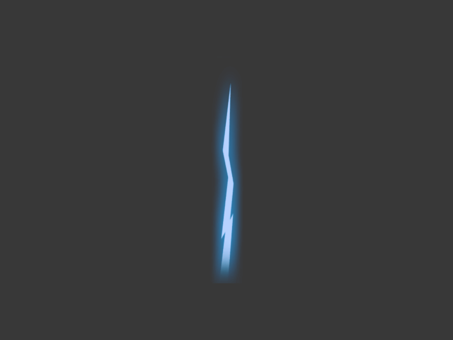
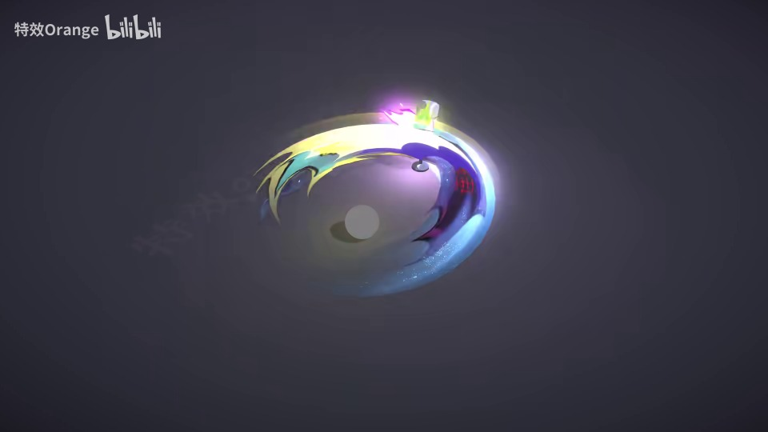
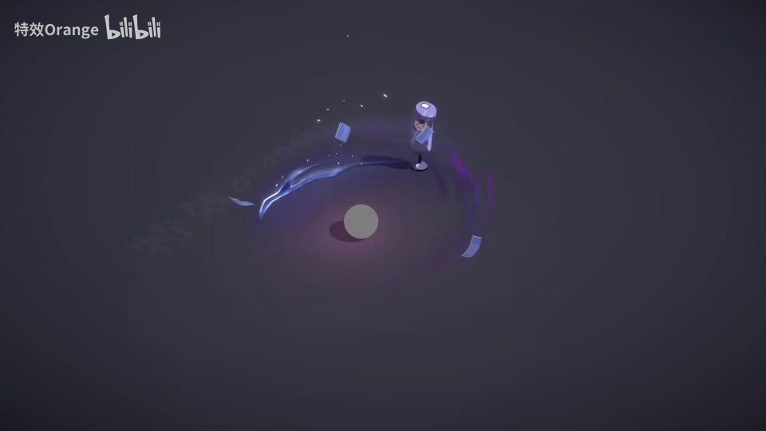
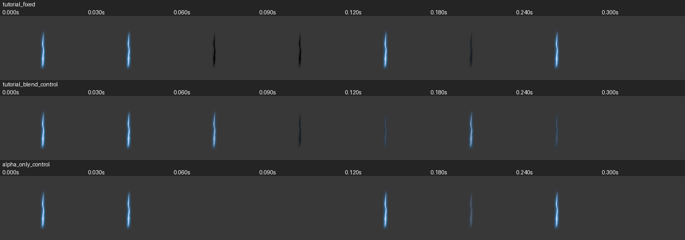

Prompt 参数真正影响画面
同资产、同种子对照下，蓝色可变红色、纵向可变横向，明确时长改变实际可见结束时间。真实 URP 的 4 组编译与回读通过，218 帧有效。
参数执行对照项目阶段汇报 · 截至 2026-09-07
目标：输入 Prompt 或 Prompt + 参考图，产出可编辑、可验证的 Unity 特效。先做透限定类型，再逐步扩展到更多特效族。
已经能把限定参数传到真实画面，并用教程校准制作机制；尚未训练出能稳定从零生成完整特效的正式模型。
历史累计底座。工程工具、训练实验与成品能力分别验收。
| 模块 | 已形成的能力 | 证据 / 当前边界 |
|---|---|---|
| 资产与数据接入 | 导入 Prefab 及材质、贴图、Mesh、Shader 依赖；建立来源、标签和结构索引。 2,115 份结构样本；38,376 条贴图、599 条 Shader、2,138 条材质记录。参考资产和可绑定资产分开。 | 结构数据清单 资产注册表 2026-09-02 快照；非质量合格数量 |
| 运行捕获与反馈 | Play Mode 连续帧、材质动态状态追踪、技术过滤、中文语义复核和 WebGL 播放通路。 五层数据中有 102 条视觉特征、1,188 条 AI 伪标签、32 条人工金标；无法判断、材质错误不进入正向监督。 | 五层数据清单 2026-09-03 快照；未知脚本仍有捕获盲区 |
| 结构化制作执行 | 制作计划与 PrefabGraph 经 Unity API 编译成可编辑 Prefab，再回读字段核对。 把“文件生成成功”和“实际画面符合目标”拆开检查，保留失败版本与执行差异。 | 执行工具与边界 不等于所有源 Prefab 可完整重建 |
| 教程学习与模型实验 | 资料转为制作步骤和判断规则；已有结构预测、局部排序的神经网络训练实验。 例如闪电脉冲排序使用 AdamW 与成对损失，但测试仅 2 对，不能外推为通用审美或开放生成能力。 | 局部训练指标 正式模型训练门禁 |
从“配置看起来正确”，推进到“运行结果有证据”。
同资产、同种子对照下，蓝色可变红色、纵向可变横向，明确时长改变实际可见结束时间。真实 URP 的 4 组编译与回读通过，218 帧有效。
参数执行对照灰色原先在三个通道重复相乘，0.5 变成 0.125；独立通道后保留 0.5。11 组编译与回读通过，446 帧有效，旧格式兼容。
颜色校准报告区分 Photoshop 图层与 Unity 对象、黑色形体与透明消失。定位 UPM 环境变量缺失，恢复真实 URP 实例，管线不匹配的画面禁止用于正向训练。
制作步骤与明确假设蓝白闪电实现亮、黑、再亮，3 个机制对照共 123 帧。已有可编辑 Prefab；Fixed 源重建的 41 帧逐像素一致，连续渐变重复性仍待校准。
查看实录与制作迭代本阶段已有实验记录：555 项 Python 测试通过，两个工程 CLI 结构检查均为 0 错误、0 警告。这些是工具与工程验收，不是特效成品的质量分。
教程局部机制 → 明确材质配方 → Unity Prefab → 连续帧验证。
E:\Unity特效人工智能学习\UnityDemo\EffectDemo\Assets\Generated\TutorialLightningFixedColorR003\tutorial_fixed\GeneratedRoot.prefab下列为制作过程的不同版本，不是严格单变量视觉对照；均展示约 0.01 秒的真实捕获画面。



受控数值对照：灰色输入 0.5，旧乘法结果 0.125，修复后 0.5；前景红通道均值由 23 变为 124。先把制作执行做正确，再让模型学习有效变化。
近期先交付少数类型的可控候选与成功率证据，不承诺一步训练统一全能模型。
第一步 · 当前优先
让 Shader、材质模板、贴图通道与顶点流共同参与检索和验证；处理连续渐变捕获的小幅波动。
验收：普通 MaterialPlan 能复用已验证配方，不依赖案例路径硬编码；重复捕获误差有可靠边界。
第二步 · 制作方法
从闪电继续，把形体、材质、层次与完整节奏逐层复现，再扩展刀光与爆炸。区分原始证据、工程推断和验证结论。
验收：完整动态效果与源教程对照通过，每一步可追溯；质量失败与无法判断分别处理。
第三步 · 正式训练
结合合格教程过程、Prefab 结构、资产配方和正负反馈；以已有模型做语义规划，训练项目专用模块。
验收：真实权重、无来源泄漏的数据切分、未见 Prompt 评测；优于规则与检索基线才晋级。
第四步 · 成品验证
优先验证闪电、刀光、爆炸三类；再接入参考图约束。按类型和风格统计，不用单个成功案例代表整体能力。
验收：报告有效生成率、条件命中率、动态完整率、整体通过率与平均迭代次数；不合格时允许全部拒绝。
正常入口复用正确配方、一个完整教程复现，以及一组固定 Prompt 的结果对照。人工继续低频修正用途和语义标签，专业质量依据教程与动态对照验证。
UNITY VFX / WORKSPACE CONCEPTS
这页把 Prompt、VFXSpec、PrefabGraph、Unity 编译/执行、五层数据、主动学习和语义修正串起来。技术数据自动覆盖全部 Prefab；非专业人工只确认用途与播放状态，审美由专业视频、教程、专家对照和 Unity 复刻训练的 Teacher/Judge 负责。
01 / ONE SENTENCE
在一个场景里反复改颜色、尺寸、生命周期和偏移。每次只看一个版本，很难知道到底是哪一个变化带来了改善，也容易把失败基础继续修补下去。
把每个版本保存为候选规格和 seed。候选之间可以横向比较，人工意见可以被记录，下一轮可以继承“为什么保留/为什么拒绝”。
02 / PIPELINE
点击任意节点，看它的输入、输出和当前工程对应文件。
它提供轮廓、层次、风格、峰值和收束等验收依据，但不能恢复隐藏的 Shader、贴图通道、Mesh 拓扑或原工程参数。参考证据与 Unity 运行真值必须分开记录。
03 / DATA OBJECT
VFXSpec 描述完整候选意图；MaterialTrajectorySpec 是已经落地的材质状态子规格，绑定真实资产并能被 Unity 执行。
{
"schema_version": "material_trajectory_spec.v1",
"trajectory_id": "mtc_001_dissolve_mat_nuge_03",
"category": "dissolve",
"label": "positive",
"source_asset": {
"material_path": "Assets/.../Mat_nuge_03.mat",
"shader_name": "Common/ColorDefault",
"texture_bindings": [{
"property_name": "_MainTex",
"texture_path": "Assets/.../texture.png",
"tags": ["slot.alpha_mask"]
}]
},
"style_profile": {"family": "unknown"},
"control_scope": "renderer_mpb",
"duration_seconds": 0.6,
"parameter_tracks": [{
"property_name": "_Dissolve_Value",
"value_kind": "float",
"curve": "smoothstep",
"start_value": [0], "end_value": [1]
}],
"expected_signals": [
"renderer_property_block_changed",
"dissolve_parameter_changed"
],
"split_group": {
"shader_group": "a2d49f234dad",
"material_group": "..."
}
}
04 / PIXEL EVIDENCE
参考目标与 R002 运行证据并列展示。文件存在、信号命中或 CLI 成功，都不能自动变成人工审美结论。





05 / INPUT MAP
Prefab、优秀视频、制作教程和评价课程不是同一种“训练数据”。它们分别提供来源资产、目标画面、制作因果和评价语言。
提供真实可编辑结构：层级、粒子、材质、Shader、贴图、Mesh、时间资产和依赖关系。
SourceAssetSpec、材质/贴图检索、可复用层和 Unity 渲染候选。提供“最后要长什么样”的视觉目标：轮廓、层次、动作、镜头、风格、峰值和收束。
ReferenceSpec、关键帧、时间轴、参考 seed 和视觉审核目标。提供“为什么这么做”的因果和制作顺序：层如何拆、参数如何联动、Shader/Mask/UV 如何服务效果。
ProcedureSpec、adapter 字段、Unity 编译器规则和可复用制作步骤。提供“什么算好”的评价语言：主体可读性、层级职责、节奏、材质、构图和典型失败模式。
CritiqueRubric、人工反馈字段、失败标签、排序/奖励模型目标。ApprovedExample06 / TOOLS AND REFERENCES
这里把已实际使用的工具、已安装的 agent skills 和仅供参考的 GitHub 项目分开。高 Star 是筛选信号，不是安装许可或兼容性证明。
权威工程为 UnityDemo/EffectDemo。当前包清单为 URP 14.0.12；隔离运行使用 Unity 2022.3.62f3c1。已修复批处理缺失 ALLUSERSPROFILE 引发的 UPM 崩溃，R002 在实际 UniversalRenderPipeline 实例下完成捕获。
vfx_source_ingest 保留依赖闭包；Material Binding Audit r3 从 Unity API 读取当前 Shader 属性。
EffectDemoMaterialTrajectoryExecutor 按精确时间执行三种 scope、六种 curve 和运行时事件。
material_trajectory_executor.py 校验 Result、Timeline、资源生命周期和图像可见面积。
material_trajectory_dataset.py 已将 Spec、Result、Timeline、视觉资格和 SplitGroup 组装为正式训练数据。
prefab_active_learning.py 与 prefab_active_review.py 负责去重聚类和用途语义修正；爆炸六轴、刀光五轴和雷电层级/命中已分别训练窄轴排序头。
GITHUB SNAPSHOT / 2026-08-28
Star、许可证和归档状态来自公开 GitHub 页面快照；数值会变化。默认动作是研究，不是安装。
SRP、URP、HDRP、Shader Graph 与 Visual Effect Graph 的官方源码参考。
STUDY当前任务只参考 Unity 2022 / URP 14 对应实现；不要把整个仓库嵌入工程。
uGUI 粒子渲染、遮罩和排序方案。
ADOPT CONDITIONALLY仅当产品需要 UI 粒子时评估；它不替代世界空间 Particle System 或 VFX Graph。
官方 URP 示例工程，可研究光照、体积感和渲染样例组织。
STUDY不作为项目依赖或资产来源直接导入。
Unity 自定义后处理效果集合，适合研究峰值、扭曲与镜头表现思路。
DO NOT INSTALL YET需按 Unity 2022 / URP 14 Volume 能力针对性移植和验证后才能采用。
Unity 创意编码组件库，适合研究程序化控制、调制与数据驱动行为。
STUDY先验证 Unity 2022 API 与包结构，不直接作为生产依赖。
Unity 噪声 Shader 函数库，可参考 Flow、Dissolve、扰动等基础函数。
SELECTIVE PORT只移植经过 Unity 2022 / URP 14 编译验证的单个函数或 Custom Function Node。
Unity GPU Stable Fluids 示例，适合未来水系、烟雾或体积感 adapter。
STUDY与当前刀光和 Prefab 渲染瓶颈无关，后置研究。
URP Shader Graph 自定义光照函数与子图，相关性高于绝对 Star 数。
SELECTIVE PORT每个函数都必须在 Unity 2022.3.16f1c1 / URP 14.0.9 单独编译、截图和性能验证。
workspace/data/vfx_generation/reports/github_vfx_reference_snapshot_2026-08-28.json；当前 agent skills 的安装与使用边界见 reports/plugin_installation_plan.md。以上均为参考或条件采用，未在本轮安装任何 GitHub 仓库。07 / RESPONSIBILITY
层不是“多加几层就更丰富”。每一层都应该有关闭后可预期的变化。
负责一眼能读出的核心意图。刀光可以是弧，护盾可以是壳，爆炸可以是体积，不能把“主体”固定成一种形状。
关闭后：技能主要意图应消失。负责空气感、包围感、流动、尺度和空间关系，不应复制主体成为职责相同的第二层。
关闭后：主体仍应独立可读。负责短时局部爆发、尖刺、碎片、冲击环或接触点，位置和寿命必须服务动作。
关闭后：主体结构不应被破坏。负责峰值后的方向性余韵，通常更碎、更淡、更短，不是把整条主体延长显示。
关闭后：节奏仍应有收束。08 / GATES
自动评价的边界很重要：它负责节省复看时间，不负责替你宣布“好看”。
| 环节 | 机器可以做 | 机器不能可靠替代 |
|---|---|---|
| 硬过滤 | 检查文件、时间点、场景/相机、Console、可见面积、过曝、帧间变化。 | 判断刀尖是否有审美力度、形体是否像参考。 |
| 类型评分 | 按特效族读取对应参数，例如刀光看方向，火焰看根部，护盾看包围关系，材质轨迹看状态信号。 | 从参数准确推断最终审美效果；规格和执行分数都只是可解释证据。 |
| 语义人工 | 分开保存特效元素、特效类型和播放状态。 | 把火焰/冰霜与刀光/法阵混在一个枚举，或填写审美分数。 |
| 专业 Teacher | 从专家原话、时间码、前后对比和 Unity 复刻生成审美监督。 | 把字幕关键词或知名来源直接当高质量标签。 |
| 视觉验收 | 提供可追溯的参考图、候选图和前后对比。 | 在没有实际图像输入时声称“效果更好”。 |
09 / TRANSFER BOUNDARY
刀光、火、雷和护盾复用相同的证据管线，但每个族仍要通过专业资料和 Unity 复刻独立证明主体、节奏、材质和偏好。
m_Texture 与 Material GUID 门禁09 / LIVE STATE
以下历史统计来自工作区文件和 Beads；旧 visual/Teacher 资格仍待管线实例复核。本次真实 URP 对照结果单独列在下方，不将参数通过写成整体成品合格。
三种 scope、六种 curve、Keyword、Texture Swap 与 Material Replace 已在 Unity 2022 Play Mode 对账。
无泄漏分区为 1169/444/502；next-token test 83.81%，multitask masked component 97.42%，审美标签消费为 0。
当前正式数据：technical 2115、visual 102、AI pseudo 1188、元素+类型 human gold 32；错误洋红和旧单维记录不进入正式监督，命中类只有 impact。
1225 个 usable Material；路径、编译和贴图回读门已有，但 Shader 功能、材质参数、贴图通道、Renderer 模式和顶点流还未完成联合语义门禁。
Shader global 和 MPB 追踪已用受控探针验证；未知脚本/属性仍保持 partial，错误洋红只进技术排除。
无 parent Graph 经 Unity API 创建 Prefab，再由 Unity API 回读；Schema 错误 0、字段差异 0。
70 个可评价候选中按不确定性、新簇、模型分歧和晋级审计抽样；元素与类型独立标注，错误洋红、重复和 split 泄漏均为 0。
雷电 Hierarchy/Impact/Pulse 已训练，Residual Teacher 已 verified。
烟花分层复现和真实闪电制作教程已进入检索约束；目标 EffectDemo 2022 完整复现与专业视觉验收尚未通过，因此不进入 Controller 正向 SFT。
10 / NEXT ACTION
已有 Prefab、Material、Teacher 和窄轴模型都作为底层数据与约束保留。主线先把 Prompt 转成可学习、可检索、可执行的 ProposalPlan，再由 Unity 执行和整体质量门判定是进入正样本还是负样本。